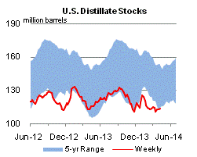

Released: April 9, 2014
Next Release: April 16, 2014
Gasoline prices expected to average $3.57 per gallon during summer 2014
In the April 2014 Short-Term Energy Outlook (STEO), EIA projects that regular-grade gasoline retail prices will average $3.57 per gallon (gal) during the current summer (April through September) driving season, similar to the $3.58/gal average of summer 2013. After rising into May, the retail price is expected to fall through the remainder of the summer because both crude oil prices and gasoline crack spreads (the difference between wholesale product price and the price of crude oil) decline. Daily and weekly national average prices can differ significantly from monthly and seasonal averages, and there are also significant regional differences, with prices in some areas exceeding the national average by 25 cents/gal or more.
{kind=link}
On April 7, the national average regular-grade gasoline retail price stood at $3.60/gal. Most of the expected increase from the current price over the next several weeks is attributable to an increase in crack spreads as a result of typical seasonal factors such as refinery maintenance and the switch to summer-grade gasoline, which is more costly to produce than winter-grade gasoline. Gasoline crack spreads are expected to average 44 cents/gal in May, up from an average of 15 cents/gal during the first quarter.
Retail prices are expected to gradually decline after May to an average of $3.46/gal in September. The largest driver of the expected decline is falling gasoline crack spreads, which are expected to decline to an average of 29 cents/gal in September. The expected decrease in crack spreads results from a projected increase in crude oil throughput at refineries, which add supplies to the market, along with easing seasonal demand increases as the summer progresses. North Sea Brent crude oil prices are projected to fall from a March average of $107 per barrel (bbl) to a May average of $105/bbl and a September average of $103/bbl. The May-to-September crude oil price drop contributes almost 5 cents/gal to the projected decline in gasoline prices.
The market's expectation of uncertainty in monthly average gasoline prices is reflected in the pricing and implied volatility of futures and options contracts. Futures contracts for New York Harbor reformulated blendstock for oxygenate blending (RBOB, a key petroleum component of finished gasoline) for July 2014 delivery traded over the five-day period ending April 3 averaged $2.85/gal. The probability that the RBOB futures price will exceed $3.35/gal (consistent with a U.S. average regular gasoline retail price above $4.00/gal) in July 2014 is about 3%.
There are several factors that could affect crude oil and/or wholesale gasoline markets, resulting in gasoline prices being higher than expected this summer. These include weather-related supply disruptions such as hurricanes, unplanned refinery outages, unplanned crude oil supply disruptions, or higher-than-expected demand growth.
Inventories can act as a stabilizer in product markets, creating a source of supply in the case of disruptions or unexpected demand. As of April 4, total U.S. gasoline inventories stood at 210.4 million bbl, 8.9 million bbl below the five-year average. However, there is significant regional variation in gasoline inventories. Notably, inventories on the Gulf Coast are 2.4 million bbl above the five-year average at 74.5 million bbl, while in the Midwest, inventories totaled 47.2 million bbl on April 4, 5.7 million bbl less than the five-year average.
Stock withdrawals have not been a significant motor gasoline supply source for the summer season in recent years, having averaged only 35,000 barrels per day (bbl/d) during the previous five summer seasons. This summer, total gasoline stocks are projected to remain almost unchanged, compared with a 31,000-bbl/d draw last summer. Moreover, the absence of a seasonal pattern differs from that of last summer, which saw a sizable draw on inventories during the third quarter. As a result, total gasoline inventories this summer are projected to end the season at 215 million bbl, 4 million bbl below last year's level but 1 million bbl above the previous five-year average.
Gasoline prices mostly higher, diesel fuel prices lower
Average U.S. regular gasoline prices increased two cents from last week to $3.60 per gallon as of April 7, 2014, a penny less than a year ago. The Gulf Coast had the largest price increase, rising five cents to $3.39 per gallon, followed by the West Coast with an increase of three cents to $3.88 per gallon. East Coast prices increased by two cents to $3.58 per gallon. The Midwest price decreased by a penny to $3.58 per gallon, while the Rocky Mountain price decreased by half a cent, but remained at $3.45 per gallon.
U.S. diesel fuel prices decreased in all regions to average $3.96 per gallon, down two cents from last week and from the same time last year. The East Coast, Rocky Mountains and Midwest each fell by two cents, to $4.08, $3.96 and $3.94 per gallon respectively. The Gulf Coast and West Coast prices each decreased by a penny, to $3.79 and $3.98 per gallon respectively.
Propane inventories gain
U.S. propane stocks increased by 1.0 million barrels last week to 27.6 million barrels as of April 4, 2014, 12.4 million barrels (31.1%) lower than a year ago. Gulf Coast inventories increased by 0.6 million barrels. Midwest and East Coast inventories both increased by 0.2 million barrels, while Rocky Mountain/West Coast inventories remained unchanged. Propylene non-fuel-use inventories represented 12.1% of total propane inventories.
Text from the previous editions of This Week In Petroleum is accessible through a link at the top right-hand corner of this page.
| Retail Data | Change From Last | Retail Data | Change From Last | ||||
| 04/07/14 | Week | Year | 04/07/14 | Week | Year | ||
| Gasoline | 3.596 | Diesel Fuel | 3.959 | ||||
|
|||||||||||||||||||||||||||
| *Note: Crude Oil Price in Dollars per Barrel. | |||||||||||||||||||||||||||
 |
 | ||||||
| Stocks Data | Change From Last | Stocks Data | Change From Last | ||||
| 04/04/14 | Week | Year | 04/04/14 | Week | Year | ||
| Crude Oil | 384.1 | Distillate | 113.2 | ||||
| Gasoline | 210.4 | Propane | 27.584 | ||||